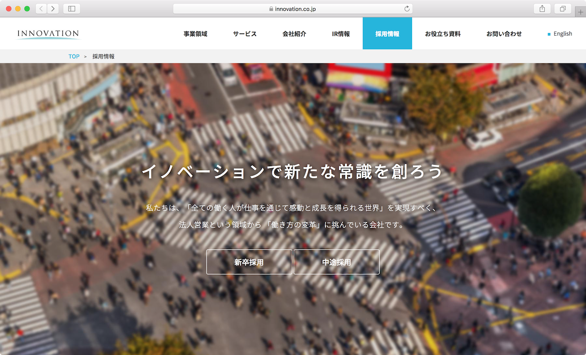

Works
2016-2017 - slogan
株式会社Cygames サマーインターン LP
GoodfindLounge LP
Seeds Incubate Competition LP
株式会社イノベーション採用サイト
Goodfind 診断テストフロント実装
2012-2016 - university
株式会社Cygames サマーインターン LP
株式会社Cygamesの2017年度サマーインターンのLPを制作しました。エンターテイメントやゲーム業界に関心のある学生にエントリーしてもらうことが目的です。
担当
UI/UXデザイン、カンプ作成、実装（webflow）、バナー作成
期間
2017/6 - 2017/7
工夫点
エンターテインメントやゲーム業界に関心のある学生をターゲットとしているため、にぎやかで自由なイメージからペンキをモチーフにしました。セクション数が多かったため、あまり単調にならないよう、各セクションにばらつきをもたせました。親会社である株式会社サイバーエージェントのイメージから、全体のトーンを黄緑にしています。
自社サービス Goodfind GoodfindLounge LP
GoodfindLoungeとは、学生との接点を増やすために、オフィス内のミーティングスペースを学生に無料で貸し出すサービスです。その申し込み用LPとして、このサイトを制作しました。大学のサークルや学生団体に使ってもらうことを想定しています。
担当
UI/UXデザイン、カンプ作成、実装（webflow）、バナー作成
期間
2017/3
工夫点
学生がページを見たときにどう使えるかイメージできるよう、写真を多く載せ、どういう用途で使うことを想定しているかLP内に記載する必要があると考えました。また、どう使えばいいかわからない学生のために、申込みフローとQ&Aをもうけました。無料であること、オフィス自体がきれいであることを推すという案もありましたが、より学生目線で考えた結果このような形になりました。
自社イベント Goodfind SeedsIncubateCompetition LP
地方学生支援プロジェクトが主催する、イベントの告知用LPを制作しました。各地方の優秀な学生が、このイベント・プロジェクトを通して新しいコミュニティの形成を促進させることが目的です。
担当
UI/UXデザイン、カンプ作成、実装（webflow）、バナー作成
期間
2017/8
工夫点
地方の学生の集客が難しいため、どんなことをするのか、どんなメリットがあるのかを伝えれるようにしました。当初は「Seeds Incubate Competition」という文字が一番目立っていたのですが、それでは何をやるかわからないので、「新規事業立案 1dayインターン」を目立たせました。また、金銭的なサポートがあることや、フィードバック、特別選考パスなどのメリットもファーストビューに入るようにしました。
ページ全体画像
株式会社イノベーション採用サイト
株式会社イノベーションの採用サイト全体の改修を行いました。弊社の他のデザイナーが先方とのやりとりやカンプ作成を行い、私は実装を担当しました。
担当
コーディング（HTML5/CSS3)
期間
2017/1 -2017/3
工夫点
カンプがすでにできていたことから、カンプを忠実に再現することに努めました。わからない部分はコミュニケーションをとりつつ、なるべく自分から既存のコーポレートサイトをチェックして「ここの動きに合わせますか？」など提案する形をとるようにしました。結果、非常にはやく実装が進み、追加の実装も素早く対応できました。
自社サービス Goodfind 診断テストフロント実装
診断テストとは、二択の問題に答えていき、自分にあった企業をレコメンドしてくれるサービスです。リリース後、あまり学生の回答数が延びなかったことから、UI/UXの改善をしてほしいという依頼が上がりました。この改修では、診断テストを受けるメリット訴求や、回答のUI改善を行いました。
担当
UI/UXデザイン、カンプ作成、コーディング（HTML5/CSS3/Sass）
期間
2016/9
工夫点
メリット訴求については、当初は全てテキストでかかれていたため、アイコンをいれ文字の配置をかえることで、メリットに注目しやすいデザインに変更しました。また、回答のUIについては、ラジオボタンとテキストで表示されていたものを、ボタン形式にし、押せる面積を増やすことでスマートフォンでもデスクトップでも押しやすい形にしました。
ヒューマンインターフェース 母校のWebページの分析・実装
3年次に行われるデザインコースの必修講義です。ただのWebページ作りではなく、人にとって使いやすいかということに重点をおき、分析から実装、効果検証までものづくりの一連の流れをこの授業を通して体験しました。
担当
現状調査、UI/UXデザイン、実装（HTML/CSS）、効果検証
期間
2014/5 - 2014/7
工夫点
[現状分析]
元サイトを分析した結果、ほとんどのページは一度アクセスしたら戻りにくい構造になっており、トップに戻るボタンが置かれていませんでした。そこで、左上に学校名を常に表示し、いつでもトップに戻れるようにしました。
[デザイン]
高校のサイトに訪れる人は、受験を考えている中学生だと考え、より学校の雰囲気が伝わるように写真を増やしました。また、右に対象別にメニューをもうけ、その人にあった情報がすぐ得られるようにしました。
元サイトを分析した結果、ほとんどのページは一度アクセスしたら戻りにくい構造になっており、トップに戻るボタンが置かれていませんでした。そこで、左上に学校名を常に表示し、いつでもトップに戻れるようにしました。
[デザイン]
高校のサイトに訪れる人は、受験を考えている中学生だと考え、より学校の雰囲気が伝わるように写真を増やしました。また、右に対象別にメニューをもうけ、その人にあった情報がすぐ得られるようにしました。
蔦屋プロジェクト スマホ／タブレットからはじまる新しい本屋スタイル
函館蔦屋書店で使える新しいアプリを開発するプロジェクトに所属しており、要望共有アプリケーションを提案しました。本プロジェクトでは、従業員がお客さんに質問されたときに、誰でも同じような返答ができるよう、よくある質問を従業員間で共有するためのアプリケーションを開発しました。実際に函館蔦屋書店の方にも直接フィードバックを受けながら改善を進めました。
担当
要件定義、現状調査、アイコン制作、ポスター制作
期間
2014/4 - 2015/2
工夫点
[現状調査]
函館蔦屋書店に何度も足を運び、現状調査を繰り返しました。直接従業員の方にお話を聴いたり、様々な層のお客さんを観察しながら、課題を発見していきました。その中で、従業員の方から、担当でないエリアについての質問をされたときに困ってしまうというお話をいただいたので、その問題を解決できるアプリケーションを開発することにしました。
[アイコン]
最初はマップをそのまま表示する予定でしたが、忙しい従業員の方でもぱっと見でわかるよう、アイコンにしないかという提案をしました。函館蔦屋書店の方からも、わかりやすくて良いという評価をいただきました。
[ポスター]
学内発表会で使用するA1サイズのポスターを2枚制作しました。当時函館蔦屋書店がオープンしたばかりで学内での知名度が高かったことから、「蔦屋のプロジェクトだ！」と気づいてもらえるように、1枚目のポスターは写真をメインにしました。
函館蔦屋書店に何度も足を運び、現状調査を繰り返しました。直接従業員の方にお話を聴いたり、様々な層のお客さんを観察しながら、課題を発見していきました。その中で、従業員の方から、担当でないエリアについての質問をされたときに困ってしまうというお話をいただいたので、その問題を解決できるアプリケーションを開発することにしました。
[アイコン]
最初はマップをそのまま表示する予定でしたが、忙しい従業員の方でもぱっと見でわかるよう、アイコンにしないかという提案をしました。函館蔦屋書店の方からも、わかりやすくて良いという評価をいただきました。
[ポスター]
学内発表会で使用するA1サイズのポスターを2枚制作しました。当時函館蔦屋書店がオープンしたばかりで学内での知名度が高かったことから、「蔦屋のプロジェクトだ！」と気づいてもらえるように、1枚目のポスターは写真をメインにしました。

卒業研究 デジタル機器とアナログ玩具を融合した学習ゲームの提案
卒業研究ではおもちゃとデジタル機器を融合した子ども向け学習ゲームの提案と効果検証を行いました。ゲームで遊びながら問題解決能力を身につけることをコンセプトとし、「みんなが幸せになれるモノづくり」ができるシステムを開発しました。
担当
現状調査、UI/UXデザイン、実装（Arduino）、効果検証
期間
2015/4 - 2016/2
工夫点
[現状調査]
デジタルとアナログを融合した既存のシステムを中心に調査を行いました。そこから何が楽しいのかを考え、本研究に応用していきました。実際に東京で行われたチームラボの展示に行き、自分自身で体験したり、子どもが遊んでいる様子を観察しました。
[実装]
実装にはArduinoとRFIDタグという非接触タグを用いました。実装の中で、どのおもちゃを使っているか読み込ませる必要があり、画像認識やセンサーなど様々な案が出ました。その中で、一番子どもの動きを邪魔しないことから、RFIDタグを採用しました。
[効果検証]
教授と、教授のお知り合いの方にお手伝いいただき、子ども10人に実際に触ってもらいました。最初は一人ずつ遊んでもらったのですが、全員の実験が終わった後、数人で同時に遊んでもらいました。そこで「これおかしい」「もっとこうだったらいい」という意見が自然とでてきて非常に参考になりました。
デジタルとアナログを融合した既存のシステムを中心に調査を行いました。そこから何が楽しいのかを考え、本研究に応用していきました。実際に東京で行われたチームラボの展示に行き、自分自身で体験したり、子どもが遊んでいる様子を観察しました。
[実装]
実装にはArduinoとRFIDタグという非接触タグを用いました。実装の中で、どのおもちゃを使っているか読み込ませる必要があり、画像認識やセンサーなど様々な案が出ました。その中で、一番子どもの動きを邪魔しないことから、RFIDタグを採用しました。
[効果検証]
教授と、教授のお知り合いの方にお手伝いいただき、子ども10人に実際に触ってもらいました。最初は一人ずつ遊んでもらったのですが、全員の実験が終わった後、数人で同時に遊んでもらいました。そこで「これおかしい」「もっとこうだったらいい」という意見が自然とでてきて非常に参考になりました。